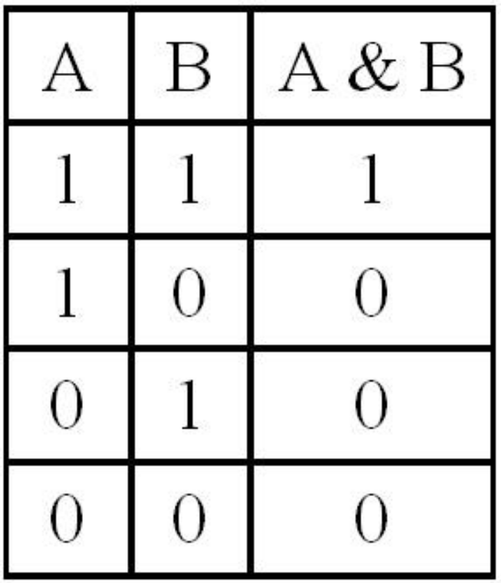
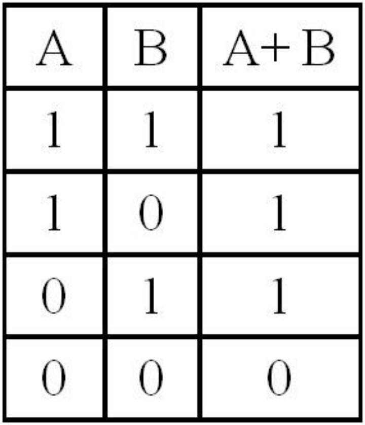
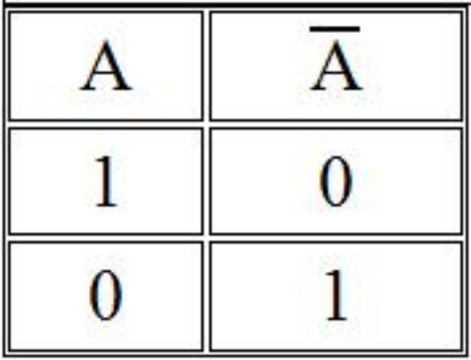
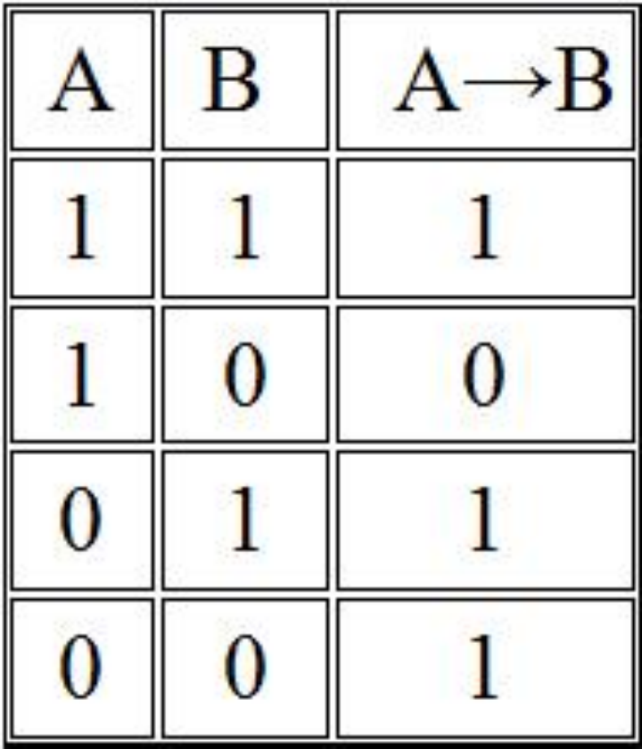
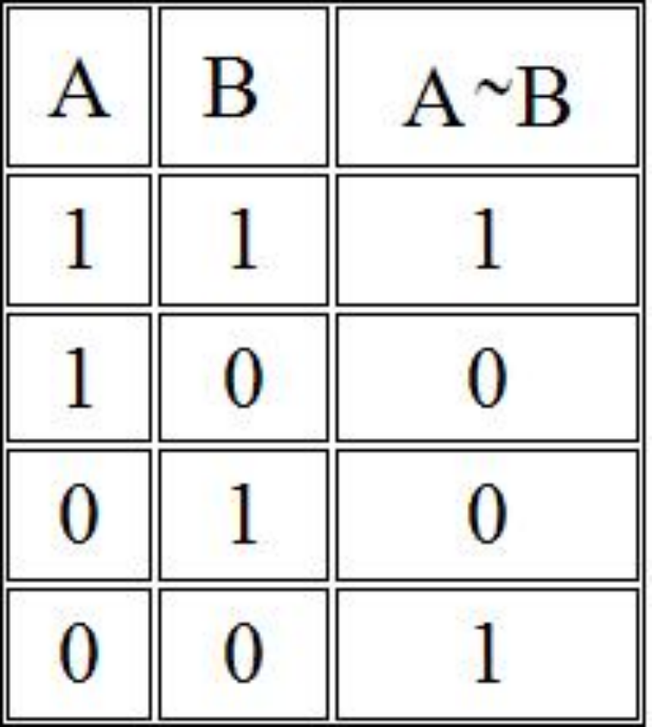
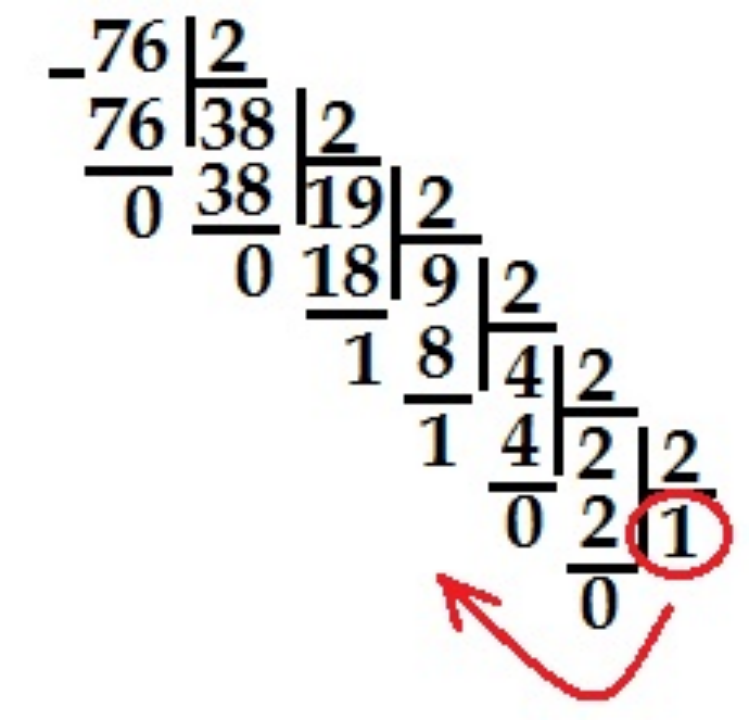
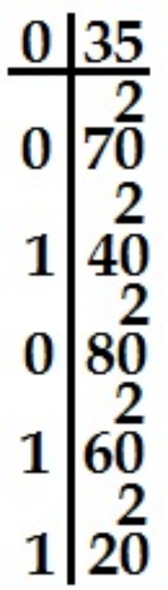

4-Тема: Информационно-логические основы персонального компьютера.
План занятия:
Логика – наука о законах и формах мышления.
Законы мира, сущность предметов, общее в них мы познаем посредством абстрактного мышления. Основными формами абстрактного мышления являются понятия, суждения и умозаключения.
Высказывание (суждение)– некоторое предложение, которое может быть истинно (верно) или ложно.
Утверждение – суждение, которое требуется доказать или опровергнуть
Рассуждение – цепочка высказываний или утверждений, определенным образом связанных друг с другом.
Умозаключение – логическая операция, в результате которой из одного или нескольких данных суждений получается (выводится) новое суждение.
Логическое выражение – запись или устное утверждение, в которое, наряду с постоянными, обязательно входят переменные величины (объекты). В зависимости от значений этих переменных логическое выражение может принимать одно из двух возможных значений: ИСТИНА (логическая 1) или ЛОЖЬ (логический 0).
Сложное логическое выражение – логическое выражение, составленное из одного или нескольких простых (или сложных) логических выражений, связанных с помощью логических операций.
Логические операции и таблицы истинности.
Логическое умножение – КОНЪЮНКЦИЯ – это новое сложное выражение будет истинным только тогда, когда истинны оба исходных простых выражения. Конъюнкция определяет соединение двух логических выражений с помощью союза. Обозначается: A & B, A /\ B.

Логическое сложение – ДИЗЪЮНКЦИЯ – это новое сложное выражение будет истинным тогда и только тогда, когда истинно хотя бы одно из исходных (простых) выражений. Дизъюнкция определяет соединение двух логических выражений с помощью союза ИЛИ. Обозначается: A+B, A \/ B.

Логическое отрицание: ИНВЕРСИЯ – если исходное выражение истинно, то результат отрицания будет ложным, и наоборот, если исходное выражение ложно, то результат отрицания будет истинным. Данная операция означает, что к исходному логическому выражению добавляется частица НЕ или слова НЕВЕРНО, ЧТО.

Логическое следование: ИМПЛИКАЦИЯ – связывает два простых логических выражения, из которых первое является условием (А), а второе (В) – следствием из этого условия. Результатом ИМПЛИКАЦИИ является ЛОЖЬ только тогда, когда условие А истинно, а следствие В ложно.Выражается словами ЕСЛИ …, ТО … Обозначается: A→B.

Логическая равнозначность: ЭКВИВАЛЕНТНОСТЬ – определяет результат сравнения двух простых логических выражений А и В. Результатом ЭКВИВАЛЕНТНОСТИ является новое логическое выражение, которое будет истинным тогда и только тогда, когда оба исходных выражения одновременно истинны или ложны. Обозначается: A↔B, A≡B.

Порядок выполнения логических операций в сложном логическом выражении:
1. инверсия;
2. конъюнкция;
3. дизъюнкция;
4. импликация;
5. эквивалентность.
Для изменения указанного порядка выполнения операций используются скобки.
Построение таблиц истинности для сложных выражений:
Количество строк = 2n+ 1 строка для заголовка (n - количество простых высказываний).
Количество столбцов = количество переменных + количество логических операций.
При построении таблицы надо учитывать все возможные сочетания логических значений 0 и 1 исходных выражений. Затем – определить порядок действий и составить таблицу с учетом таблиц истинности основных логических операций.
Пример: составить таблицу истинности для функции .
Решение: В этой функции две переменные, значит в таблице истинности будет 22+1=5 строк и 2+4(операций)=6 столбцов. Построим таблицу истинности.
